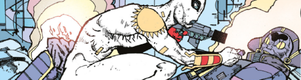

A hyper-stylized space opera where operative Proteus Vex of the Imperium seeks to stop threats to galactic peace.
Art by Henry Flint
| Story Title | Parts | Pages | w indicates a wraparound coverCovers | Year(s) | Issues | Writer | Artist | Colourist | Letterer |
|---|---|---|---|---|---|---|---|---|---|
| Another Dawn | 9 | 50 | 2165: D'Israeli 1 | 2019-2020 | 2162-2169, 2171 | Michael Carroll | Henry Flint | <-- | Simon Bowland |
| The Shadow Chancellor | 11 | 60 | 2214: Neil Roberts 1 | 2020-2021 | 2212-2219, 2221-2223 | Michael Carroll | Jake Lynch | Jim Boswell | Simon Bowland |
| Desire Paths | 13 | 70 | 2263: Cliff Robinson & Dylan Teague 2268: Neil Roberts2 | 2021-2022 | 2262-2274 | Michael Carroll | Jake Lynch | Jim Boswell | Simon Bowland |
| year | episodes | pages |
| 2002 | 0 | 0 |
| 2003 | 0 | 0 |
| 2004 | 0 | 0 |
| 2005 | 0 | 0 |
| 2006 | 0 | 0 |
| 2007 | 0 | 0 |
| 2008 | 0 | 0 |
| 2009 | 0 | 0 |
| 2010 | 0 | 0 |
| 2011 | 0 | 0 |
| 2012 | 0 | 0 |
| 2013 | 0 | 0 |
| 2014 | 0 | 0 |
| 2015 | 0 | 0 |
| 2016 | 0 | 0 |
| 2017 | 0 | 0 |
| 2018 | 0 | 0 |
| 2019 | 1 | 10 |
| 2020 | 9 | 50 |
| 2021 | 11 | 60 |
| 2022 | 12 | 60 |